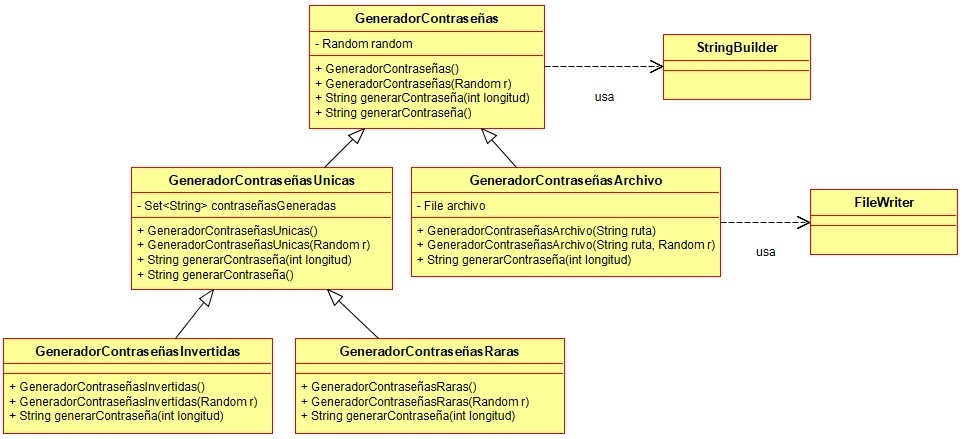

Ejercicio 14 : Consulta el diagrama de clases Contraseñas y programa la clase GeneradorContraseñas, que es un objeto que genera contraseñas aleatorias y utiliza para ello la clase StringBuilder, de la librería estándar de Java.

-
La propiedad “random” es el objeto que la clase usa internamente para generar números aleatorios que den lugar a las letras de las contraseñas.
-
El primer constructor crea un generador de contraseñas, creando su Random interno.
-
El segundo constructor crea un generador de contraseñas con el Random suministrado.
-
El primer generarContraseña genera una contraseña usando el total de caracteres pasado como parámetro. La contraseña se generará así:
-
Se empieza generando un número aleatorio entre 0, 1 y 2.
-
Si el número sale 0, generará aleatoriamente otro número entre 48 y 57 (ese es el rango de los códigos ASCII de los números).
-
Si el número sale 1, generará aleatoriamente otro número entre 65 y 90 (ese es el rango de los códigos ASCII de las letras mayúsculas).
-
Si el número sale 2, generará aleatoriamente un número entre 97 y 122, (ese es el rango de los códigos ASCII de las letras minúsculas).
-
Se añadirá a la contraseña el carácter cuyo código ascii se ha generado. Aunque no es imprescindible, se aconseja usar la clase StringBuilder para ir construyendo el String de la contraseña.
-
El segundo generarContraseña genera una contraseña de 8 caracteres de longitud.